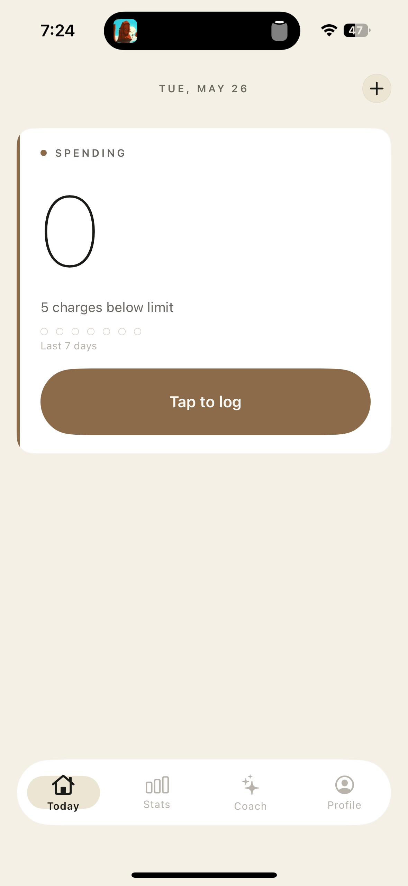
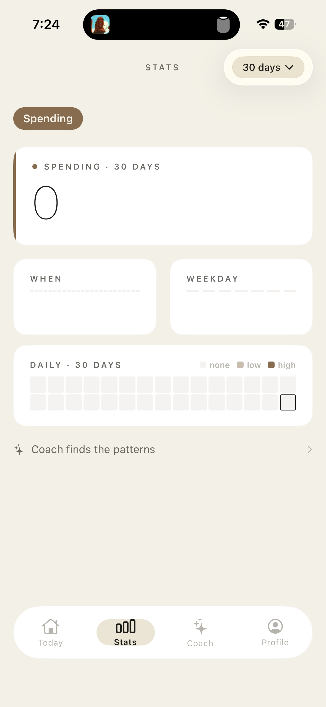
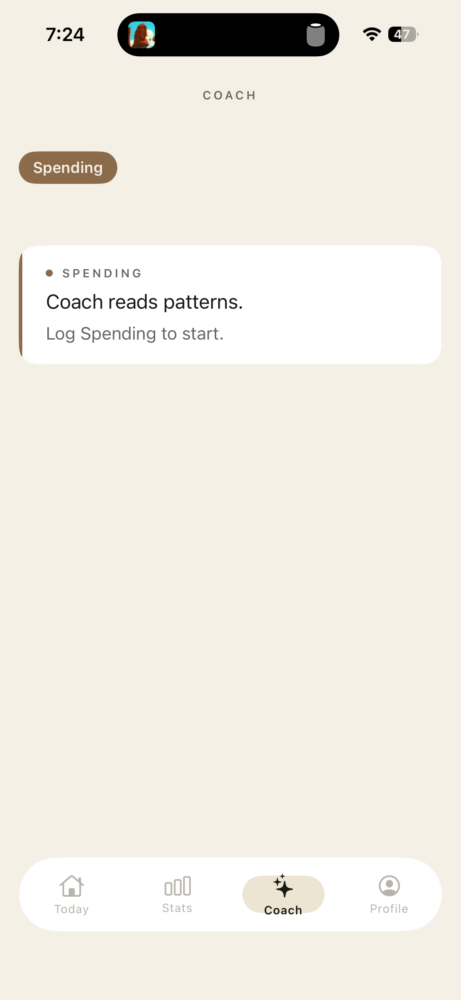
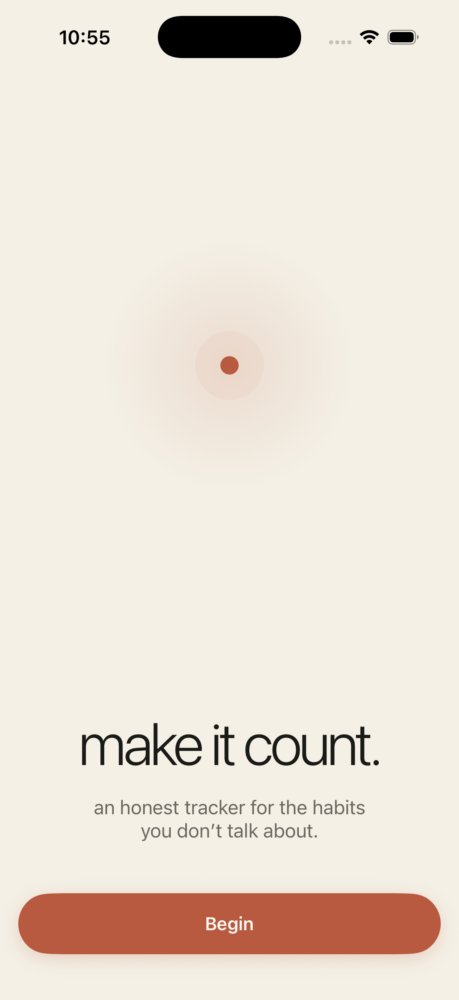

Your phone is too far away
Unlocking your phone, finding the app, navigating a UI — that's four steps before you've logged anything. Most people quietly quit instead of tracking.
ONIS puts your daily habits on your wrist. Raise. Tap. Done — in under a second, without ever reaching for your phone.

Why ONIS
Friction. When tracking takes more effort than the habit itself, you stop. ONIS eliminates friction at the source.
Unlocking your phone, finding the app, navigating a UI — that's four steps before you've logged anything. Most people quietly quit instead of tracking.
Score systems, penalty streaks, weekly reviews — apps that feel like work get abandoned within days. Simplicity is the only sustainable model.
Apps buried in folders don't build habits. You need them visible, present, on the device you check hundreds of times a day: your wrist.



The app
A clean, warm interface designed for speed and clarity on both iPhone and Apple Watch.
From users
"I've tried every habit app. The Watch tap is genuinely different — it logs before my brain can make an excuse. Three months straight now."
"Most apps stressed me out with penalty streaks and graphs. ONIS is calm. I see my rings, know where I stand, and move on. Nothing more."
"The streak visual is a cheat code. Seeing 30 days makes missing day 31 feel genuinely costly. I haven't missed a reading day in six weeks."
How it works
Pick from curated templates — Run, Read, Meditate, Hydrate — or create custom habits with your own emoji and color. Set a daily or flexible schedule.
Raise your wrist. Tap the habit. Done — in under one second, without your iPhone. ONIS sits on your wrist as a complication and a full glanceable app.
Every tap closes a ring. Streaks track consistency automatically. Daily, weekly, and monthly views show exactly how far you've come — and how close you are today.
Download
Free for iPhone and Apple Watch. No account required.